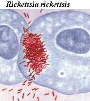

IMMUNE DEFENSE AGAINST ALIEN PATHOGENS: PROS and CONS
(Basic Infectious Immunology)
Humans live in an environment teeming with beings and substances capable of attacking them and producing immunologic responses. Contact with antigen leads not only to induction of a protective immune response, but also to reactions that can be damaging to tissues. The standard "prescribed" realization of the optimal, properly regulated immune response (both against alien and against self-antigens), per se, does not provoke any allergic or autoimmune disorders. That's why, jumping from the description of common immune response immediately to the review of allergic reactions, we may create false impression, that such a complicated and wise system as immune one, exists exclusively for implication of different misadventures. Of course, it is not so! And therefore, violating the tradition reflected by many Textbooks of Pathology - to omit Infectious Immunology and stay that item for the Textbooks of Microbiology, this program offers to the reader the brief comparative discussion of immune responses towards various exogenous pathogens.

As a rule, in majority of individuals the immune system provides relatively effective defense against infections, minimizing their consequences and/or speeding up the recovery. But, immune defense always has some cost and not all among its manifestations are beneficent or salutary for the body.
The immune responses that may result from such exogenous antigens take a variety of forms, ranging from clinically inapparent course, registered exclusively by increase of Ig titers in repeated serological assays, through the long row of troublesome but nonessential tolerable discomforts, such as urticaria, hay fever or itching of the skin - to potentially fatal disease such as bronchial asthma or insulin dependent Diabetes Mellitus. Immune response triggered by an exogenous pathogen may be non-effective or harmful for the host, some details of host-germ interaction may precipitate allergic and autoimmune diseases or cause immune deficiency.
NEXT CHAPTER OR